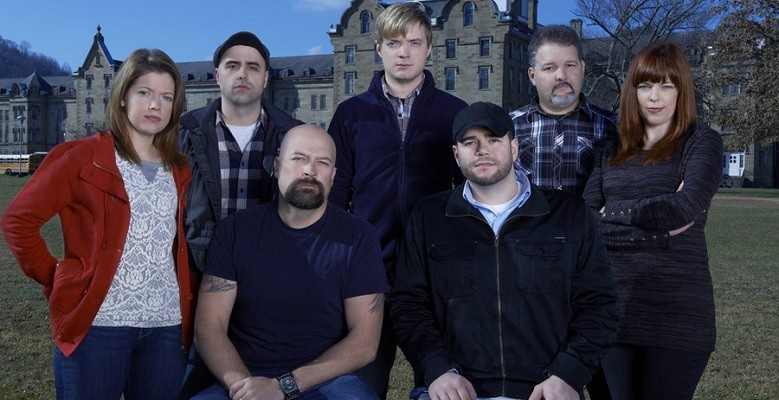

Ghost
Shows
Many shows sprouted around the turn of the century. They range from staying the night at the haunted location, to just being locked in the location for 24 hours.
Shows like Ghost Hunters really broke the stigma and unwanted critics for a profession that would soon spread all over the world.
It's not until recently with the creation of Discovery+ and the help of Ghost Adventures that a large fanbase was created. You nopw have local paranormal groups as well as international ones.
